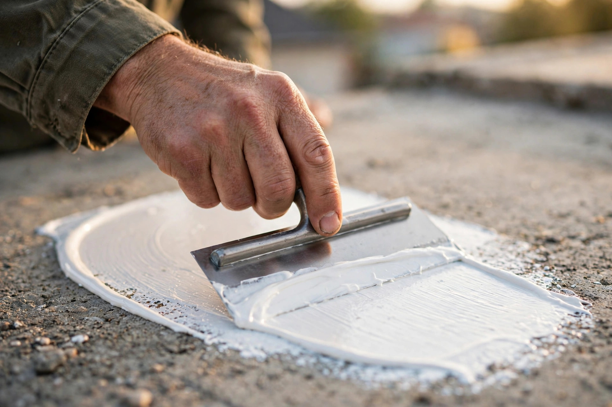
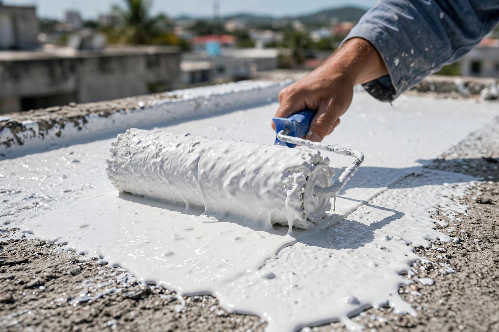
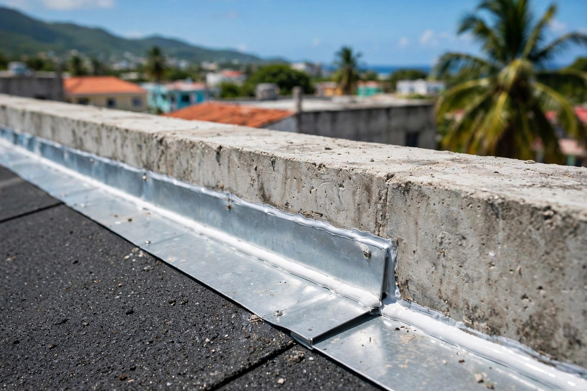

Luquillo • Este de Puerto Rico
Soy Efraín Ayala Rivera. Sello y trato techos en Luquillo y el este con el cuidado de quien firma su trabajo: limpieza profunda, sellado parejo y garantía de palabra.
Mi trabajo
Cada techo que sello lleva mi nombre: preparación artesanal y acabado parejo.



Servicios
Luquillo y el este de Puerto Rico
Sellado elastomérico aplicado con calma y precisión, capa por capa.
Limpieza y preparación a fondo: la base de un sellado que dura.
Reparaciones generales del hogar con la misma seriedad.
Remodelación y mejoras para que tu casa quede como nueva.
Cómo trabajo
Me cuentas qué le pasa a tu techo por WhatsApp o llamada.
Voy, subo al techo y te digo la verdad de lo que necesita.
Limpio, trato y sello con calma: sin prisa, sin chapucerías.
Revisamos juntos el trabajo. Mi nombre queda en ese techo.
Preguntas frecuentes
Sí. Yo mismo evalúo, preparo y sello tu techo. Hablas directamente conmigo de principio a fin.
Nada. La visita y el estimado son gratis y sin compromiso.
Limpieza profunda, reparación de grietas y detalles, y luego la aplicación del sellador. Un techo bien preparado dura muchos más años.
Estoy en Luquillo y atiendo el este: Fajardo, Ceiba, Río Grande, Naguabo, Humacao y áreas cercanas.
Mi trabajo lleva mi nombre: si algo no quedó bien, regreso a corregirlo. Así de simple.
Esta página la creó ManuPro. Escríbenos hoy mismo y cotiza la website profesional de tu negocio.
Cotizar por WhatsApp